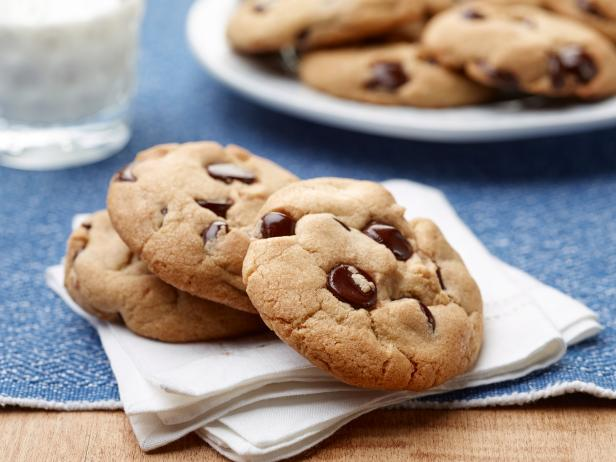

Cinnamon Cookies

Roll in cinnamon sugar to coat. Quick and easy cinnamon cookies recipe, requiring simple ingredients and loaded with cinnamon! They are soft and chewy on the inside, crispy on the outside.
Ingredients of Cinnamon Cookies
- Prepare 2 of eggs.
- Prepare 150 g of sugar.
- Prepare 0.5 teaspoon of baking soda.
- It's 1 teaspoon of cinnamon.
- Prepare Pinch of salt.
- You need 100 g of butter.
- It's 250 g of flour.
Always, all opinions are mine.* I am adding this cinnamon cookies recipe today to my ever-growing collection of cinnamon recipes. These Brown Sugar Cinnamon Cookies with white chocolate chips are so over the top delicious. If you love soft and chewy cinnamon cookies, you've struck gold with these! Soft & Chewy Brown Sugar Cinnamon Cookies.
Cinnamon Cookies Instructions
- Break 2 eggs, add 150g of sugar and mix them until it will look like mass on photo..
- Add soda and cinnamon, then mix..
- Grate butter, then add it to mass and mix..
- Add flour, then knead the dough until it will stop stick to hands..
- Smear pan with oil..
- Form spheres from dough. You can use teaspoon for making them if you want them to be totally equal. Make 20 spheres then put them on the pan..
- Cook in oven with 180 C° temperature for 15-20 minutes (do not overcook them!) When they're done, put them on plate and let them cool down. That's it. I will appreciate any feedback. Bon appetit!.